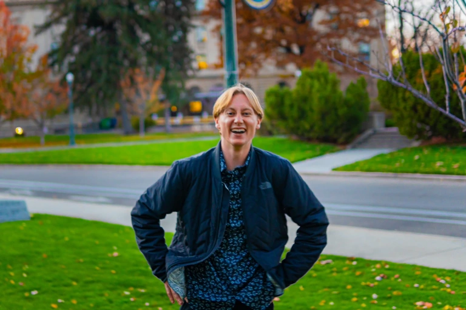

Welcome to my Personal Website!

The purpose of this website is to showcase myself as an Academic as well as a professional.
Below are links to my Resume, my professional and academic expierience, and my hobbies so that
you can learn a little about myself outside of the proffesional world.
A little about me.
My name is Benjamin Wall and I am an environmental studies major that wants to make a difference in the world! I love backpacking, snowboarding, and all things outdoors and believe that protecting the natural environment and the wildlife that resides in it is one of the largest problems our generation currently faces. Feel free to explore the website and thank you for taking the time to learn a little about me!